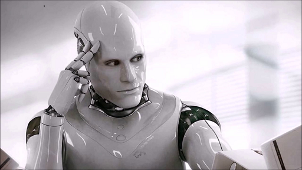
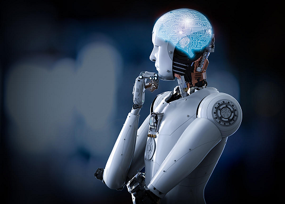

Artificial Intelligence Philosophy
LINKS
- MAIN PAGE
- Introduction
- Applications
- Types of artificial intelligence
- Artificial Intelligence Philosophy

1- Calculating machines and intelligence "Turing Law"
If the device works with an intelligence comparable to a person, then its intelligence is the same as human intelligence. Alan Turing's theory states that, ultimately, we can only judge the intelligence of a machine based on its performance. This theory forms the basis of the Turing test.
2- Dartmouth Thesis
"Every aspect of the learning process or other manifestations of intelligence can be described very precisely that enables a person to design a machine that simulates it." This assertion was printed in the thesis submitted to the Dartmouth Conference in 1956, and it represents the position of most researchers in the field of artificial intelligence.
3 - The physical symbol system (the premise of Noel and Simon's system of physical symbols)
“The physical symbol system has the necessary and sufficient means for smart actions in general.” The effect of this sentence is that the essence of intelligence lies in the ability to manipulate symbols. On the contrary, Ober Dreyfus believes that human experiences are instinctively subconsciously and do not depend on consciously manipulating symbols; It requires a person to have a "feeling" of the situation even if he does not have sufficient knowledge of symbols.
4- Godol's incomplete theorem
A logical system (such as a software program) cannot prove all the correct sentences. Roger Penrose and others believed that Goodell's theory set limits to what machines can do since they put an end to what can be computed mathematically, but it did not set limits for what a person can do.
5- Searle's Hypothesis on Strong Artificial Intelligence (Chinese Chamber)
"A computer can have a brain similar to the human mind if it is appropriately programmed with the correct inputs and outputs." Searle responds to this assertion by his argument known as the Chinese Chamber, which asks us to look inside the computer, to try to know where this "mind" might be.
6- The hypothesis of the artificial brain
Brain can be simulated. (Hans Moravec), (Ray Kurzweil) and others said that it is technically possible to copy the brain directly into equipment and software, and that this will be done in exactly the same way as the original.
